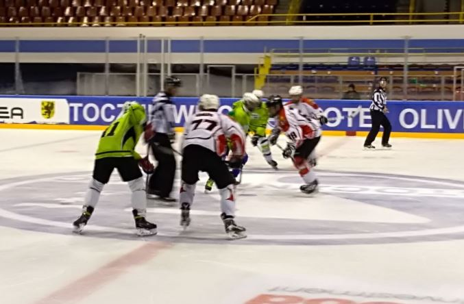
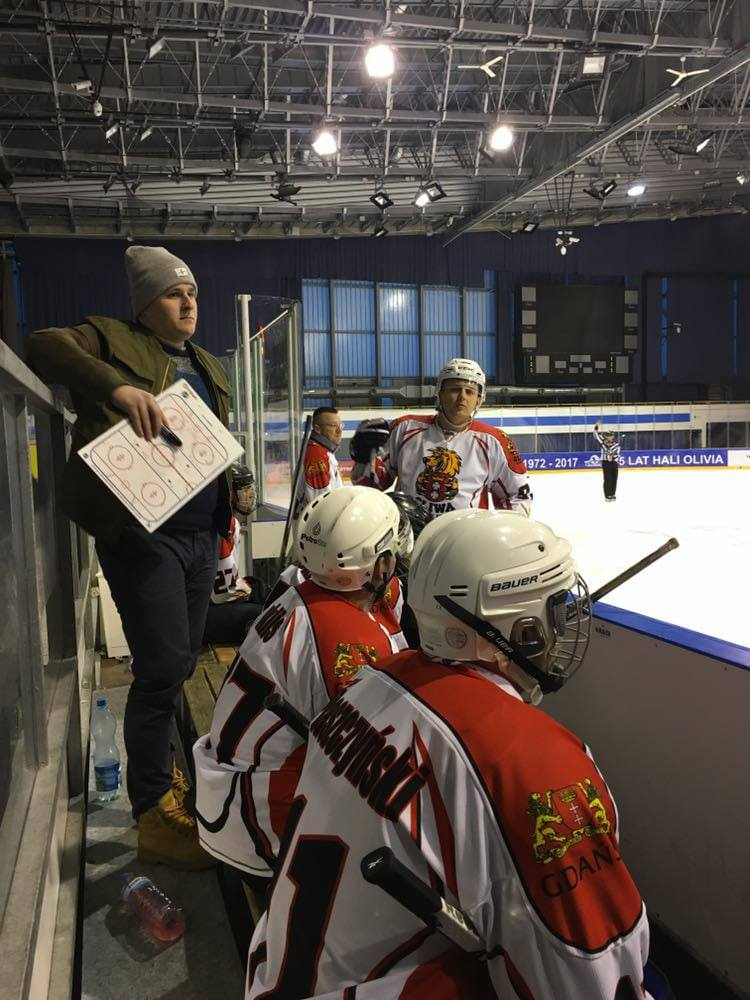
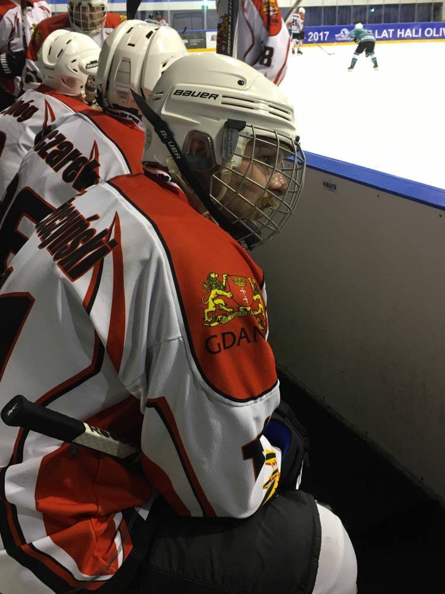
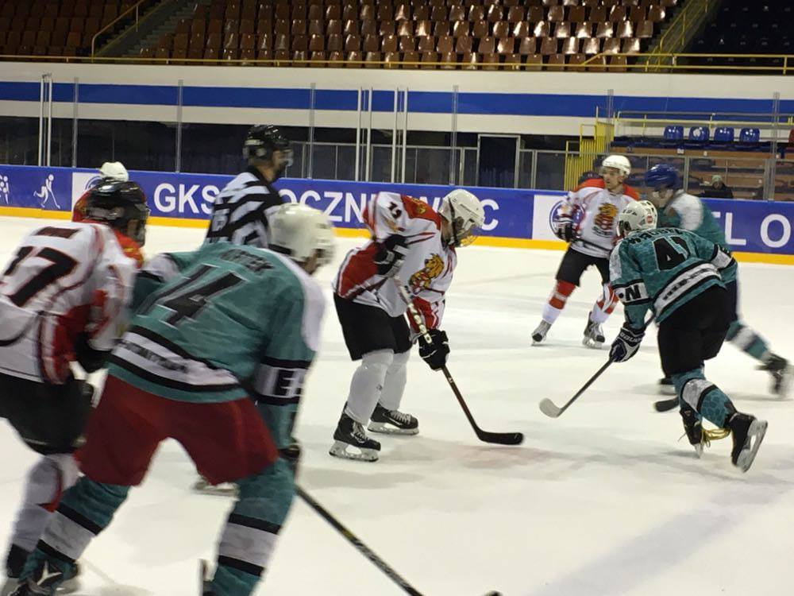
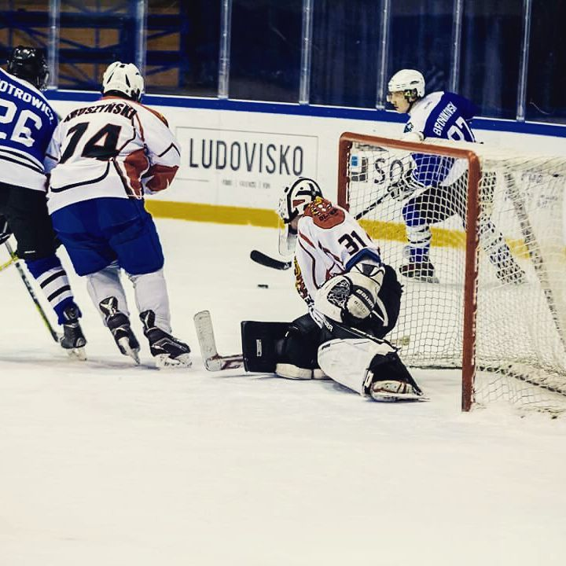

TRÓJMIEJSKA LIGA HOKEJA 2017/18
1 Kolejka
W meczu inaugurującym rozgrywki brązowi medaliści poprzedniego sezonu podejmowali zespół Lidera HT. Faworyci tego spotkania po pierwszej tercji przegrywali 1-2, jednak w dalszej fazie meczu to oni zdobywali bramki, wykorzystując między innymi dwukrotnie grę w przewadze.
MARVINS/OLIWA HOCKEY TEAM - LIDER HOCKEY TEAM 6 - 2 (1:2, 3:0, 2:0)
0-1 (5:12) Marcin Grandys - Marcin Rut
1-1 (9:55) Jakub Walicki (w osłabieniu)
1-2 (12:39) Damian Kamiński - Kamil Kamiński - Artur Rembowicz
2-2 (16:47) Maciej Kondlewski - Ryszard Narzyński
3-2 (21:05) Leszek Szczepkowski - Jakub Stańczyk (w przewadze)
4-2 (25:02) Jakub Stańczyk - Arkadiusz Bruliński (w przewadze)
5-2 (33:28) Artur Kazimierczak - Tomasz Cejnóg
6-2 (34:49) Arkadiusz Bruliński - Artur Kazimierczak


TRÓJMIEJSKA LIGA HOKEJA 2017/18
2 Kolejka
MOHT Gdańsk odnosi drugie zwycięstwo w sezonie, pokonując po ciekawym meczu GKH Gdynia. Mając aktualnie 6 punktów obejmują pozycję lidera rozgrywek, przynajmniej do wieczornego starcia Goldwella z FCDH.
GKH Gdynia - Marvins/Oliwa Hockey Team 3-7 (0:2, 1:2, 2:3)
0:1 (2'37) Walicki Jakub - Campbell Oliver
0:2 (14'24) Stańczyk Jakub
0:3 (24'49) Kazimierczak Artur - Campbell Oliver (sm +1)
1:3 (26'02) Kłosiński Michał- Przybyła Karol (sm +1)
1:4 (26'15) Campbell Oliver - Kazimierczak Artur
1:5 (32'07) Wańczyk Wojciech - Walicki Jakub - Szczepkowski Leszek
2:5 (33'04) Przybyła Karol - Andrzejewski Jan - Gnerowicz Dariusz (sm +1)
3:5 (40'13) Grabowski Piotr - Andrzejewski Jan (sm +1)
3:6 (40'29) Kazimierczak Artur
3:7 (41'50) Bruliński Arkadiusz - Walicki Jakub - Wańczyk Wojciech
TRÓJMIEJSKA LIGA HOKEJA 2017/18
3 Kolejka
Meczem Grizzlies z MOHT Gdańsk zakończyliśmy 4 kolejkę. Wynik 22 do 0 jest najwyższym w rozgrywanym sezonie i pozwolił Oliwie na dołączenie do grupy zespołów z 9 punktami w tabeli. W zwycięskiej drużynie punktowało aż 16 zawodników, wśród który Jakub Walicki zdobył 6 bramek i zaliczył 3 asysty.
Grizzlies Gdynia - Marvins/Oliwa Hockey Team 0 - 22 (0:6, 0:7, 0:9)
1:41 0 - 1 Wańczyk Wojciech - Kuklis Tomasz
3:03 0 - 2 Walicki Kuba
4:07 0 - 3 Campbell Oliver - Stańczyk Jakub , Kułak Bartłomiej
4:17 0 - 4 Nowak Bartosz - Piaszczyński Łukasz
10:25 0 - 5 Kondlewski Maciej - Piaszczyński Łukasz
12:20 0 - 6 Walicki Kuba - Stańczyk Jakub
15:29 0 - 7 Kuklis Tomasz - Piaszczyński Łukasz , Nowak Bartosz
17:06 0 - 8 Walicki Kuba - Stańczyk Jakub
17:55 0 - 9 Wańczyk Wojciech - Walicki Kuba
18:34 0 - 10 Piaszczyński Łukasz - Szczepkowski Leszek , Narzyński Ryszard +1
21:30 0 - 11 Piaszczyński Łukasz - Kondlewski Maciej
23:18 0 - 12 Nowak Bartosz - Kuklis Tomasz
29:14 0 - 13 Walicki Kuba - Stańczyk Jakub , Campbell Oliver
31:06 0 - 14 Nowak Bartosz - Kazimierczak Artur
34:54 0 - 15 Kułak Bartłomiej - Campbell Oliver , Kurzawa Adam
36:13 0 - 16 Walicki Kuba - Szczepkowski Leszek , Kaziemierczak Artur
36:48 0 - 17 Kuklis Tomasz - Campbell Oliver , Stańczyk Jakub
38:26 0 - 18 Walicki Kuba - Kondlewski Maciej
39:18 0 - 19 Cejnóg Tomasz - Kułak Bartłomiej
42:05 0 - 20 Stańczyk Jakub - Piaszczyński Łukasz , Strojny Rafał
43:28 0 - 21 Bruliński Arkadiusz - Kazimierczak Artur , Walicki Kuba
44:41 0 - 22 Campbell Oliver - Nowak Bartosz , Walicki Kuba


TRÓJMIEJSKA LIGA HOKEJA 2017/18
4 Kolejka
Dragons nowy liderem, po pierwszym meczu piątej kolejki. Smoki do zwycięstwa poprowadził atak Wróbel - Krtek - Kosonen, który był zamieszany w każdego z czterech goli. Dla MOHT to pierwsza porażka w tym sezonie, pomimo objęcia prowadzenia na starcie meczu.
Dragons Gdańsk - Marvins/Oliwa Hockey Team 4 - 1 (2:1, 1:0, 1:0)
3:27 0 - 1 Bruliński Arkadiusz - Kazimierczak Artur
10:19 1 - 1 Krtek Jiri - Wróbel Adrian
14:48 2 - 1 Wróbel Adrian - Krtek Jiri , Kosonen Anton
25:28 3 - 1 Krtek Jiri - Wróbel Adrian , Kosonen Anton
41:32 4 - 1 Wróbel Adrian - Lisek Marcin , Wiński Daniel -1
TRÓJMIEJSKA LIGA HOKEJA 2017/18
5 Kolejka
MOHT - GOLDWELL 2-4 (0:1,2:2,0:1)
0:1 (0:42) Bronikowski Kamil- Piotrowicz Marek
0:2 (15:38) Spichalski Przemysław
1:2 (16:51) Campbell Oliver- Cejnóg Tomasz
2:2 (17:18) Campbell Oliver
2:3 (29:45) Bronikowski Kamil- Bubenko Marcus
2:4 (41:22) Ryń Jakub- Bubenko Marcus- Błażuk Tomasz (sm +2)

TRÓJMIEJSKA LIGA HOKEJA 2017/18
6 Kolejka
MOHT - FCDH 10-0 (4:0,4:0,2:0)
1:0 (0:38) Kazimierczak Artur- Walicki Kuba
2:0 (1:58) Walicki Kuba- Kazimierczak Artur
3:0 (9:17) Walicki Kuba- Kuklis Tomasz, Szczepkowski Leszek (sm +1)
4:0 (11:08) Walicki Kuba- Kazimierczak Artur
5:0 (17:19) Kułak Bartłomiej
6:0 (17:37) Kazimierczak Artur- Walicki Kuba
7:0 (22:06) Walicki Kuba- Campbell Oliver
8:0 (23:54) Kazimierczak Artur- Cejnóg Tomasz, Campbell Oliver
9:0 (30:30) Walicki Kuba- Campbell Oliver
10:0 (39:31) Kazimierczak Artur- Campbell Oliver (sm -2)
TRÓJMIEJSKA LIGA HOKEJA 2017/18
7 Kolejka
LIDER - MOHT 3-6 (1:1,1:4,1:1)
1:0 (4:38) Kamiński Kamil- Wojciechowski Przemysław
1:1 (14:41) Kazimierczak Artur- Stańczyk Jakub
2:1 (17:27) Kamiński Kamil- Kamiński Damian (sm -1)
2:2 (18:32) Campbell Oliver (sm +1)
2:3 (23:24) Walicki Kuba- Campbell Oliver
2:4 (26:35) Kazimierczak Artur (PS)
2:5 (28:13) Bruliński Arkadiusz- Stańczyk Jakub
2:6 (31:09) Bruliński Arkadiusz- Stańczyk Jakub, Kazimierczak Artur
3:6 (44:44) Wojciechowski Przemysław- Wojtoniak Dominik
TRÓJMIEJSKA LIGA HOKEJA 2017/18
8 Kolejka
MOHT - Gdynia 3-2 (2:0,1:1,0:1)
0:1 (7:08) Kuklis Tomasz- Kondlewski Maciej
0:2 (8:35) Walicki Jakub- Kazimierczak Artur, Campbell Oliver
0:3 (17:26) Campbell Oliver- Walicki Jakub, Kazimierczak Artur (sm +1)
1:3 (26:02) Lickiewicz Piotr- Stachowiak Wojciech, Kłosiński Michał (sm +1)
2:3 (31:07) Andrzejewski Janek- Kłosiński Michał- Przybyła Karol (sm +1)
TRÓJMIEJSKA LIGA HOKEJA 2017/18
9 Kolejka
Mad Dogs - MOHT 8-6 (3:0,2:3,3:3)
1:0 (4:11) Suwała Grzegorz- Palimeris Karol
2:0 (11:45) Kaczmarek Patryk- Żołnowski Michał
3:0 (14:58) Kaczmarek Patryk- Tyczyński Jacek (sm +1)
3:1 (15:08) Walicki Jakub- Bruliński Arkadiusz, Kazimierczak Artur
4:1 (25:14) Kaczmarek Patryk- Kocemba Piotr
5:1 (26:22) Żołnowski Michał- Tyczyński Jacek, Palimeris Karol
5:2 (27:30) Kondlewski Maciej- Stańczyk Jakub, Narzyński Ryszard
5:3 (29:54) Kazimierczak Artur- Walicki Jakub, Szczepkowski Leszek
5:4 (30:50) Kazimierczak Artur- Walicki Jakub, Campbell Oliver
5:5 (33:39) Kazimierczak Artur
6:5 (39:30) Kaczmarek Patryk- Okuniewski Michał, Palimeris Karol (sm +2)
7:5 (41:21) Żołnowski Michał- Okuniewski Michał, Kocemba Piotr (sm +1)
8:5 (44:37) Kocemba Piotr- Kaczmarek Patryk
8:6 (44:56) Kazimierczak Artur- Bruliński Arkadiusz, Walicki Jakub
TRÓJMIEJSKA LIGA HOKEJA 2017/18
10 Kolejka
MOHT - Mad Dogs 3-1 (1:1,0:0,2:0)
1:25 (0:1) Tyczyński Jacek - Suwała Grzegorz
9:04 (1:1) Kazimierczak Artur - Cejnóg Tomasz , Bruliński Arkadiusz
41:00 (2:1) Kazimierczak Artur - Cejnóg Tomasz , Stańczyk Jakub +1
43:36 (3:1) Walicki Jakub -1
 MARVINS OLIWA HOCKEY TEAM
MARVINS OLIWA HOCKEY TEAM